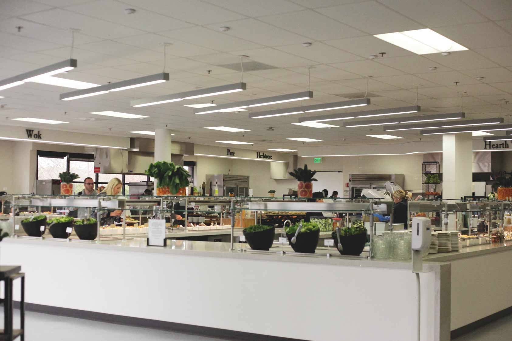
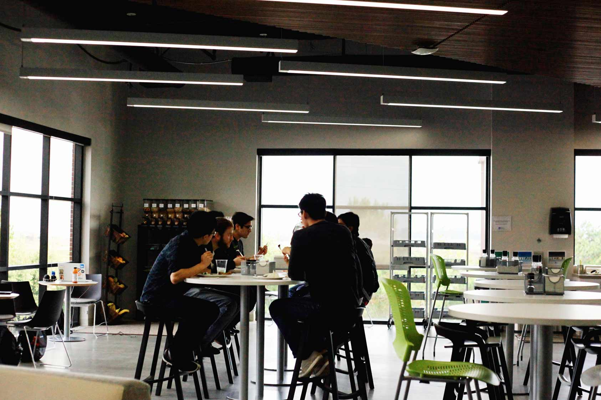
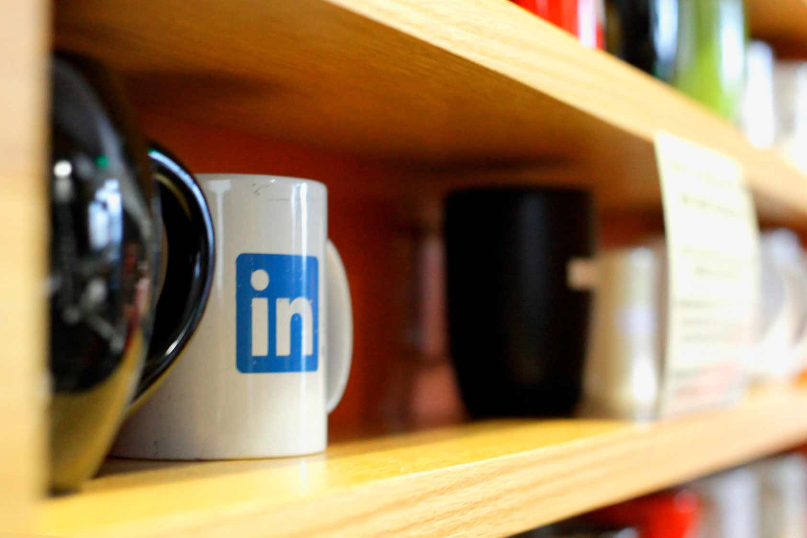

비즈니스 관계를 맺을 수 있는 가장 유명한 소셜 네트워크 서비스, LinkedIn. 무려 전세계 4억 명 회원들이 만남의 장을 만들어낸 이 회사는 구글 캠퍼스의 가운데에 있었다. 지난 2016년 6월 마이크로소프트가 인수한 화제의 회사, LinkedIn에 재직하고 계신 이종호 선배님을 만나 뵈었다.
안녕하세요 선배님. 저희는 서강대학교 Art & Technology학과 학생들로 이루어진 공간 431팀입니다. 지금까지 엔지니어링쪽 선배분들만 만나뵙다가 마지막 날에 드디어 디자이너분을 만나게 되어서 영광이에요. 선배님은 어떤 업무를 하고 계시는지 간단히 소개 부탁드려도 될까요?
안녕하세요. 먼길 오느라 수고하셨어요. 저는 UI/UX 디자이너예요. 하는 업무는 크게 비주얼 구현과 UI작업이 있어요. 다른 회사나 에이전시들을 보면 이 두 업무를 따로 작업하는 곳들도 있는데 여기서는 둘 다 할 수 있어서 큰 장점인 것 같아요. 엔지니어들과 잘 커뮤니케이션하려고 노력하고, 비주얼이나 UI 어느 한 쪽에만 치우치지 않은 좋은 결과물을 만들어 내려 노력하고 있어요. LinkedIn은 designer culture이 잘 돼있는 회사고, 디자이너가 PM-엔지니어-디자이너 삼각구도에서 목소리가 비교적 큰 편이에요, 포커스가 테크쪽인 회사들에 비해서는.
LinkeIn의 사내 분위기는 어떤가요?
이종호 선배님 : 실리콘밸리의 여느 기업과 같이 사원들이 건강과 복지를 굉장히 신경 쓰는 편이에요. 식사랑 스낵, 운동 프로그램을 적극적으로 지원해줘요. 미국 애들이 처음 대학교에 들어가면 15파운드(대략 7kg)가 찐다는 걸 농담삼아 freshman 15라고 하는 말이 있는데, 여긴 LinkedIn 20에요(웃음). 식사랑 스낵을 너무 잘 준비해놔서 들어오면 다들 살 엄청 찐다고들 해요. 운동프로그램은 요가나 킥복싱 등이 있었던 것 같고, 퍼스널 트레이너도 지원해 줘요.
LinkedIn이라면 회사가 하는 일의 특성상 다양한 문화권의 사람들을 채용할 것 같은데 실제로도 그런가요?
아무래도 그런 부서들이 있기는 하지만, 디자인 쪽은 업무 특성상 적은 편이에요. 디자이너의 업무는 사실 실제로 무언가를 만드는 것이 반이고, 나머지 반이 세일즈 피칭을 하는 거예요. 얼마나 개발자, 동료 디자이너, 그리고 PM들에게 내 아이디어를 파느냐가 중요한 직업인데, 그래서 커뮤니케이션 능력이 중요하게 요구되죠. 게다가 디자인은 문화에 관련된 것이다 보니 미국 문화에 친숙한, 미국 기반의 디자이너들이 많아요 아무래도. 조금 힘든 부분이긴 하지만 여기서 지내고 일하다 보면 많이 동화되긴 해요. 여러 사람들과 인터렉션을 통해 자연스럽게 동화되어가는 것 같아요. 엔지니어쪽은 인도나 중국 등 외국인들이 많은 편이에요.
그렇군요. 선배님의 실리콘밸리에 오기까지의 이야기를 들려주실 수 있나요?
저는 사실 학부땐 영문학을 전공했어요. 전혀 디자인 쪽이랑 관련은 없었지만 원래 그림도 그리고 만화를 굉장히 좋아했어요. 그래서 졸업하고는 게임회사를 다녔었어요. EA코리아라고, 지금은 커졌지만 그 당시에는 한국 지사가 직원이 열댓 명 정도의 규모로 굉장히 작았어요. 본사 기준으로 돌아가는 시스템이라, 본사 쪽으로 출장을 자주 다녔었어요. 심즈라는 게임을 한글화에 참여했는데, 그 때 미국으로 출장을 와서 본사쪽 개발팀이랑 같이 협업하며 한 달 정도 머무르게 되었고, 그 때 유학을 결심하게 된 것 같아요. 사실 유학을 늦게 나온 편이였죠. 가정도 꾸리고 직장생활도 어느 정도 하던 차에 유학을 온 거거든요. 일찍 올 수 있으면 일찍 오는 것이 좋은 것 같아요. 회사를 다니다 보면 조금 거기에 안주하게 되거든요, 그러기 전에 좀 더 일찍 왔었으면 달랐지 않을까 하는 생각이 들어요. 여튼 게임회사를 5년정도 다니다가 바로 유학을 나왔어요. ETC(카네기멜론 대학의 석사프로그램)까지 마치고 나니 4년이 걸리더라구요. 어떻게 보면 학부를 다시 다닌 셈이죠. 디자인공부는 처음이다 보니, 스스로 실력이 조금 모자랄 것 같다는 생각에 수업을 일부러 많이 들었어요. 학부 클래스도 많이 듣고, 교수님들에게 자주 찾아가거나 행사도 많이 참여했어요.
카네기 멜론 대학(CMU)에서는 어떤 경험을 하셨는지 여쭤봐도 될까요?
CMU에서 배운 것 중에는 인터렉션 쪽이 확실히 도움이 되었어요. 학부 과정은 실제로 돌아가는 UI를 만드는 실습 쪽에 집중하는 반면, 대학원과정은 세미나 위주, 이론 위주로 수업이 진행되었어요. 배운 이론들을 토대로 가설, 논문 등을 썼는데 두 학기, 즉 일 년 동안 thesis를 쓰고 프로젝트를 만들어내야 했어요. 처음엔 기본기가 없어 조금 힘들었는데 현업에서 일을 하면서 차차 만드는 것에 대한 감이 생기고 있어요. 실제로 일을 하다 보면 재밌는 주제들이 많아요. Procrastination(일을 미루는 버릇)이라는 주제를 가지고 프로젝트를 해본 적이 있었는데, 어떻게 하면 디자인적으로 이런 현상을 줄일 수 있을까 하는 고민에서부터 출발하여 이것 저것 시도해볼 수 있었죠.
저희도 학과에서 디자인 공부를 하다 보면 어떤 것이 좋은 디자인인지에 대한 고민이 들어요. 예쁜 디자인과 좋은 디자인이 뭘까요?
저도 디자이너 일을 하면서 끊임없이 고민하는 부분인 것 같아요. 저도 학부전공이 디자인이 아니었다 보니 기반이 부족하다는 생각들도 들고, 약간 자신이 없어질 때도 있어요. 학부 때부터 시작한 친구들이 많으니까 아무래도. 그래도 UX부분은 자신의 실력을 쌓는 것이 가장 중요해요. 많이 접해 봐야 해요. 꼭 디자인 베이스가 아니더라도 크게 좌절할 필요가 없는 게, 제가 아는 사람들 중에는 학부 전공이 전혀 상관없는 분야였지만 실무를 하면서 성장한 사람들이 있어요. 제가 보기엔 단순작업을 뛰어넘는 디자인에 대한 고민이 항상 필요한 것 같아요. 저는 그래서 항상 디자이너로서의 기본기가 뭔가 항상 고민하는 편이에요. 운동선수들 같은 경우에는 기본기가 사실 뚜렷하잖아요. 하루의 시작을 운동으로 시작해서 하루의 정해진 routine을 만드는 것 처럼, 일상에 녹여낸 디자이너로서의 방법을 고민하고 있어요.
디자인도 사실 트렌드라는 게 있잖아요, 이런 것들에 대한 고민도 있어요. 일을 하다 보면 내 마음에 안들어도 대세라는 흐름이 존재하는 걸 인정할 수 밖에 없을 때도 있고. 아이폰을 예로 들면, 옛날에는 디자이너들이 drop shadow로 차별성을 주다가 material쪽으로, 그리고 flat으로 옮겨갔죠. 그 다음으로는 motion이 사용자에게 새로운 리얼리티를 제공하고 있어요. 엔지니어들도 새로운 기술들이 쏟아져 나오니까 그에 맞춰서 스스로를 계속 업그레이드할 수밖에 없는 상황이에요. 구시대의 mindset이랑 skillset상태로 도태될 수밖에 없어요. 그래도 디자이너들은 새로운 것들을 좋아하는 사람들이라 변화에 적응을 잘 하는 것 같아요.
그렇군요. 저희도 계속 고민해야 할 문제인 것 같아요. 화제를 조금 바꿔서 엔지니어가 아닌 직종은 실리콘밸리쪽에 진입장벽이 특히 더 높다고 들었는데, 이에 관한 이야기를 들려주실 수 있나요?
아무래도 엔지니어들이 공급에 비해 수요가 훨씬 큰 편이라 이쪽으로 오기엔 가장 좋은 방법이긴 하죠. 실리콘밸리에선 scale up이 가장 중요한 목표인데 그에 필요한 일꾼들을 구하기엔 무에서 유를 구현하는 엔지니어들이 제격이죠. 그렇기 때문에 UX쪽에서도 실력이 있으면 충분히 도전할 수 있다고 생각해요. 존 마에다가 dribble에서 한국이 한 아이콘 디자인을 보고 트윗했다가 바로 애플에서 그 한국인 디자이너를 채용한 일이 있었잖아요. 큰 회사들은 실력 좋은 인재들을 바로 스카우트 할 여력이 되요. 발전 가능성이 있는 디자인에 대한 수요는 언제든지 있으니까요. dribble이나 behance같은 기존 플랫폼들을 잘 이용해서 포트폴리오를 준비하세요. 실력이 정말 중요해요.
사실 비자이슈가 여기와서 일하는데 가장 큰 진입장벽이긴 하죠. 지금은 경기가 활황이라 비자를 받으려는 사람들이 몰려있어요. 예전에 미국이 불황이던 시기에는 비자가 남아돌아서 쉽게 받을 수 있었는데, 제가 유학을 끝내고 취업할 때쯤 되어서 경기가 회복되더라구요(웃음). 추첨으로 비자를 주는데, 그래도 대학원을 미국에서 나오면 기회를 한번 더 줘서 확률이 조금 더 높아요. 친구 중에는 학부졸업 후에 취업비자 추첨에서 떨어진 친구가 있었는데, 떨어지자마자 같은 학교 대학원 1년짜리 과정을 등록했어요. 대학원 졸업 후에는 비자문제가 잘 풀렸는데, 어쩔 수 없이 고국으로 돌아갈 수밖에 없는 상황에 처할 수도 있기 때문에 굉장히 까다로운 문제예요.
일을 시작하시면서 그 이전에는 몰랐던, 후배들에게 들려주고 싶으신 이야기가 있나요?
네트워킹도 중요한 스킬인 것 같아요. 제가 LinkedIn에서 일해서 이런 말을 하는 건 아니구요 (웃음). 이 동네 분위기 자체가 한 회사에 오래 있지 않고 몇 년간 경력을 쌓은 후에 다른 회사로 이직하는 분위기이기도 해서 그래요. 보통 어떤 회사에서 사람을 구할 때 구인공고를 통해서 주로 뽑을 것 같지만 사실 내부추천이 많이 이루어져요. 다들 같은 학교 출신 등 네트워킹을 이어나가는 이유가 여기 있어요. 사실 실력도 실력이지만 누구를 알고, 누구를 통해서 들어오느냐도 무시 못하는 부분인 것 같아요. 본인이 직장을 옮길 때 이전에 같이 일하던 실력 있는 사람들을 스카우트 해 가기도 해요. LinkedIn도 처음 생길 때 UX 헤드로 있는 분이 Adobe에서 부서를 만드신 분인데 통째로 팀을 여기로 데려왔어요.
귀중한 시간을 내주셔서 감사합니다. 많은 도움이 되었어요.
조심해서 들어가세요.